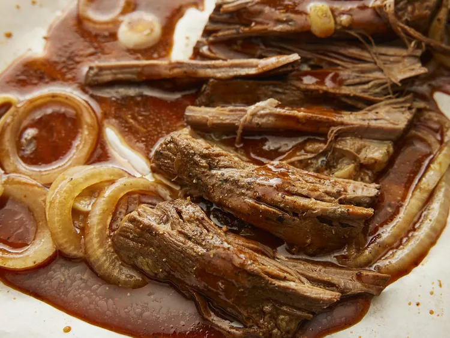

Slow Cooker Texas Smoked Beef Brisket

The recipe and image is taken from allrecipes
Easy brisket recipe in a crockpot that allows for a great meal on busy days, letting it cook without much micromanaging
This will give about 4 servings
Ingredients
Brisket Rub:
- 3 tablespoons smoked paprika
- 2 tablespoons ground black pepper
- 2 tablespoons kosher salt
- 1 tablespoon brown sugar
- 1 tablespoon chili powder
- 1 teaspoon ground cumin
- 1 1/2 lbs beef brisket
Barbeque Sauce:
- 3/4 cup Barbeque sauce
- 1/4 cup water (optional)
- 1 tablespoons worcestershire sauce
- 1/4 teaspoon liquid smoke flavoring
- 1/2 onion, sliced into rings
Steps
- Gather all ingredients
- Prepare brisket rub: mix all ingredients for it
- Rub evenly over brisket, put it in a resealable plastic bag, refrigerate for 30 minutes-overnight
- Prepare bbq sauce, stir all ingredients for it in the bottom of a slow cooker
- Remove brisket from the refrigerato and take it out of the bag. Lay it in the slow cooker
- Arrage onions over the brisket
- Cook on low until brisket is tender, 6-7 hours
- Rest the brisket for 10 minutes before slicing
- Serve with the sauce from the slow cooker